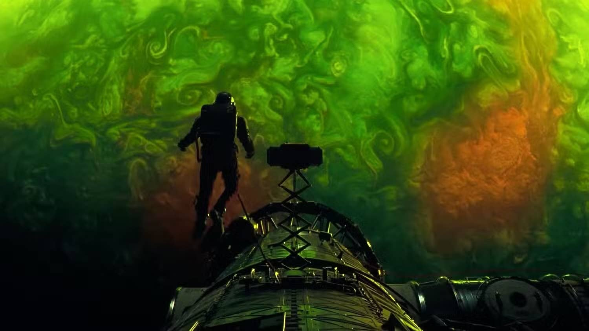

Once Upon a Page
Once Upon a Page

The Sleeper Wakes

An unnamed man wakes up in darkness feeling disoriented as a computerized voice repeatedly asks, “What’s two plus two?” The man’s mind is sluggish, and when he tries to respond, he only produces meaningless sounds. Slowly, he becomes aware of his body and realizes that he is lying on a soft, oval-shaped bed but cannot move his limbs. His eyelids finally open, and bright white light sears his eyes. Above him, robotic arms hang from the ceiling and cameras monitor his every movement. The voice continues its questioning until the man forces out the correct answer: “Four.” The computer acknowledges his response and then asks another math question.
As the unnamed man gains more awareness, he realizes that medical tubes are hooked up all over his body. Additionally, electrodes are attached to his skin, monitoring his vital signs. When the man starts to move, the computer detects his movement, and the robotic arms remove most of the tubes from his body. The man notes that his muscles appear strong and toned, which seems strange for someone who has presumably been bedridden for a long time.
Examining his surroundings, the unnamed man sees that the room is rounded with no visible door. The only exit appears to be a ladder leading to a hatch in the ceiling. Nearby, two other beds contain motionless figures. When he investigates, he discovers that both occupants are long dead, their bodies reduced to mummified remains. The presence of these corpses suggests he has been in this place for a long time, yet somehow, he is still alive. The computer asks him for his name, but he is shocked to realize he does not remember it. He tries to come up with an answer, but nothing comes to mind. After three failed attempts, the computer sedates him, and he loses consciousness.
Suddenly, a memory surfaces: the unnamed man is sitting in a diner in San Francisco, eating breakfast. He receives an email from Dr. Irina Petrova, an astronomer in Russia, who describes an unusual discovery. She has detected a thin, infrared-emitting line extending from the Sun toward Venus, something that does not match any known astronomical phenomenon. The memory vanishes as suddenly as it appeared, leaving the man back in the sterile, confined space with no clear connection between his past life and his current situation.
Determined to move, the unnamed man forces himself off the bed and onto the floor. The robotic arms react instantly, reaching for him, but he stays out of their grasp. On the floor, the man’s strength gradually returns, and he makes his way toward the ladder. Climbing it is a struggle, as his body feels unnaturally heavy. He reaches for the hatch but loses his grip and falls. Before he can hit the floor, the robotic arms catch him and gently place him back in bed. Something about the way he fell feels wrong, but he is too exhausted to focus on it.
Then, the computer dispenses a tube of food, instructing the unnamed man to eat. Though skeptical, he tries the brown sludge and is shocked by how delicious it tastes. After finishing the meal, he feels noticeably stronger. He climbs the latter and succeeds this time, which results in the discovery of a fully stocked laboratory. Everything is clean, neatly arranged, and bolted to the surfaces, as if designed for an environment where things might shift or float. He instantly recognizes the equipment—a scanning electron microscope, a 3D printer, a milling machine, and various lab tools—which makes him assume he is a scientist.
The unnamed man finds another ladder leading to a second hatch, but when he tries to open it, the computer stops him and tells him he must state his name before he can open it. He still cannot remember. Frustrated, he descends, but as he climbs down, he missteps and falls, crashing into a supply cabinet. Once again, something about how the man fell does not seem right. Determined to figure out what is wrong, he conducts a simple physics experiment. Using a stopwatch and a test tube, he calculates how fast objects fall. His results shock him: the gravity in the room is much stronger than it should be. The man decides that there is only one possible explanation for this phenomenon: he is not on Earth.